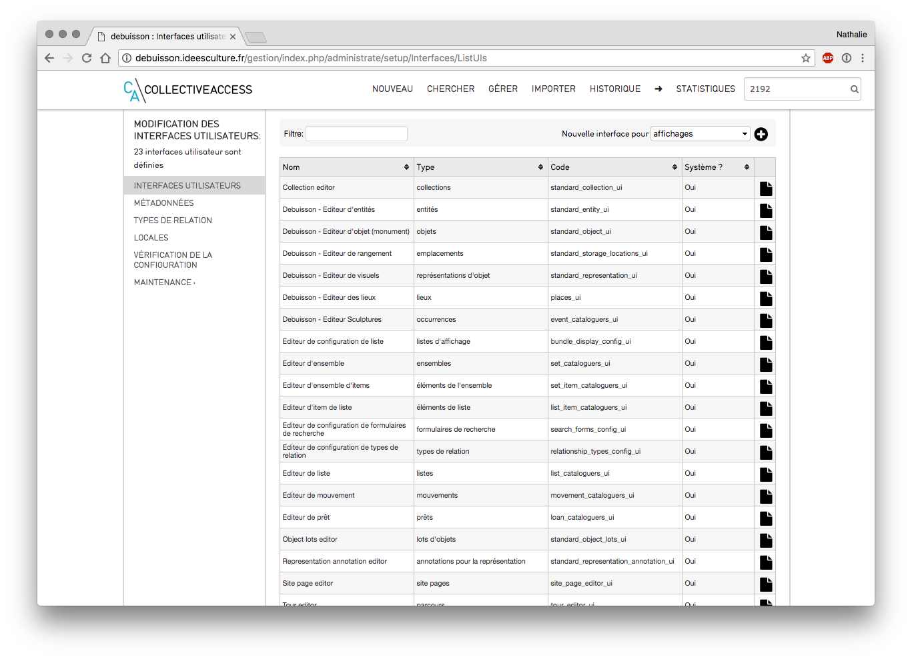
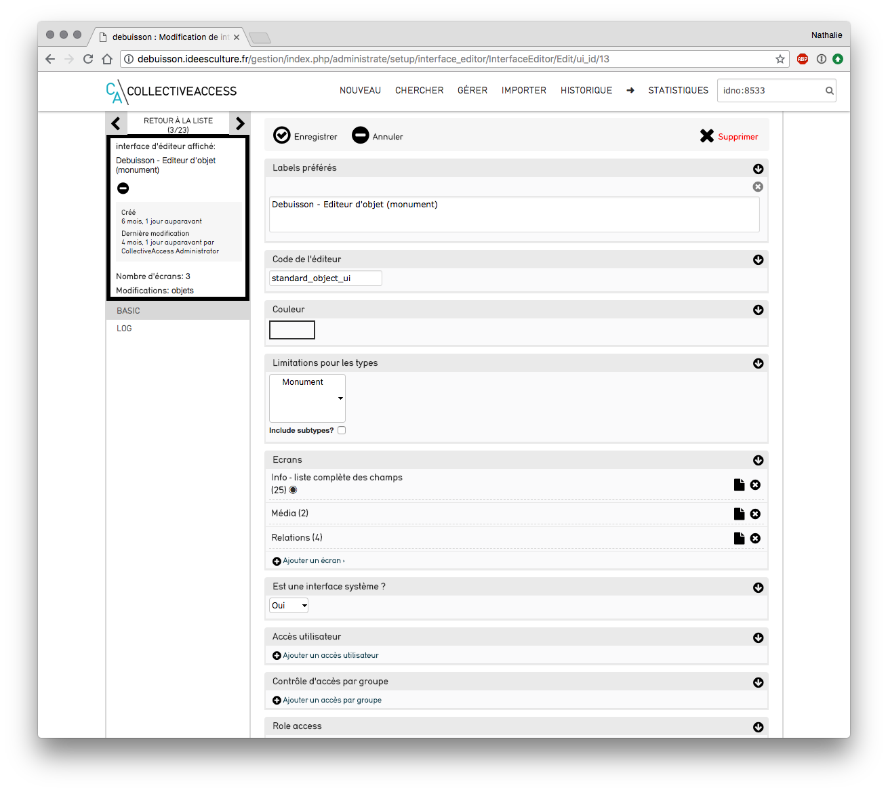
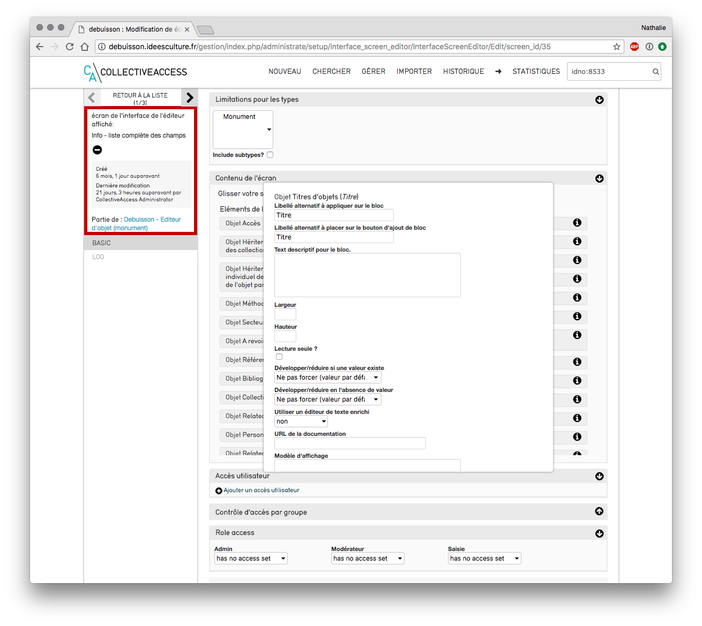
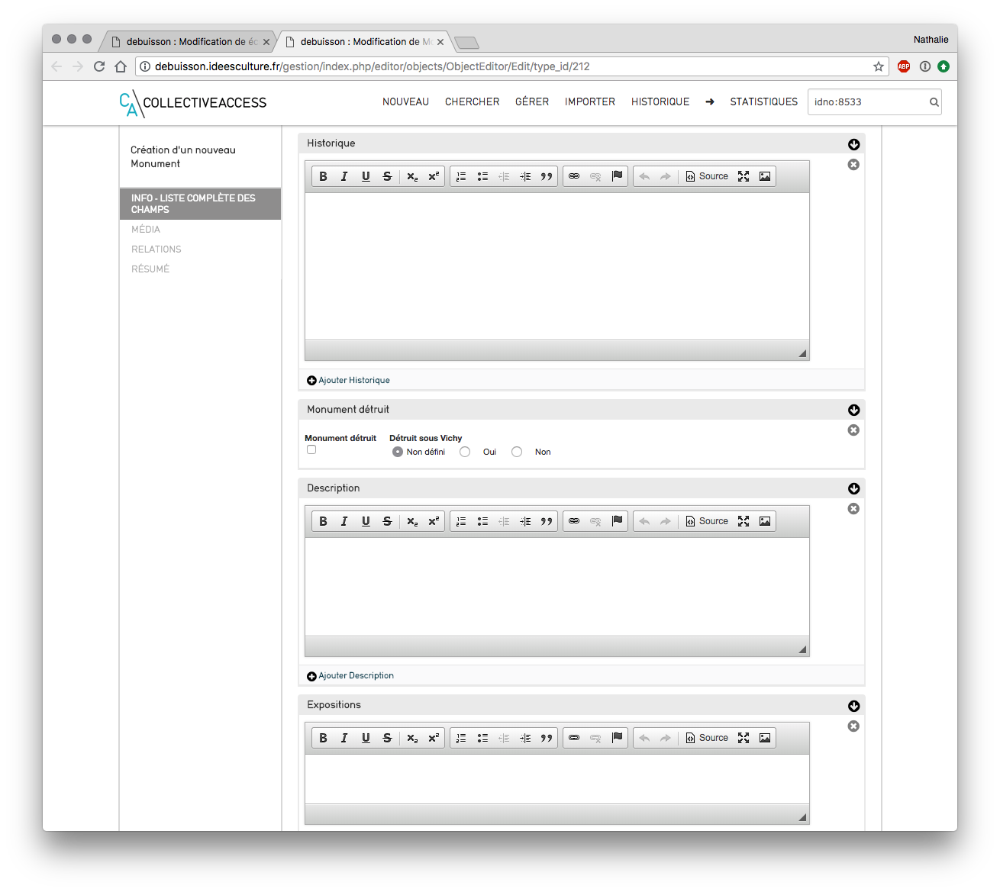
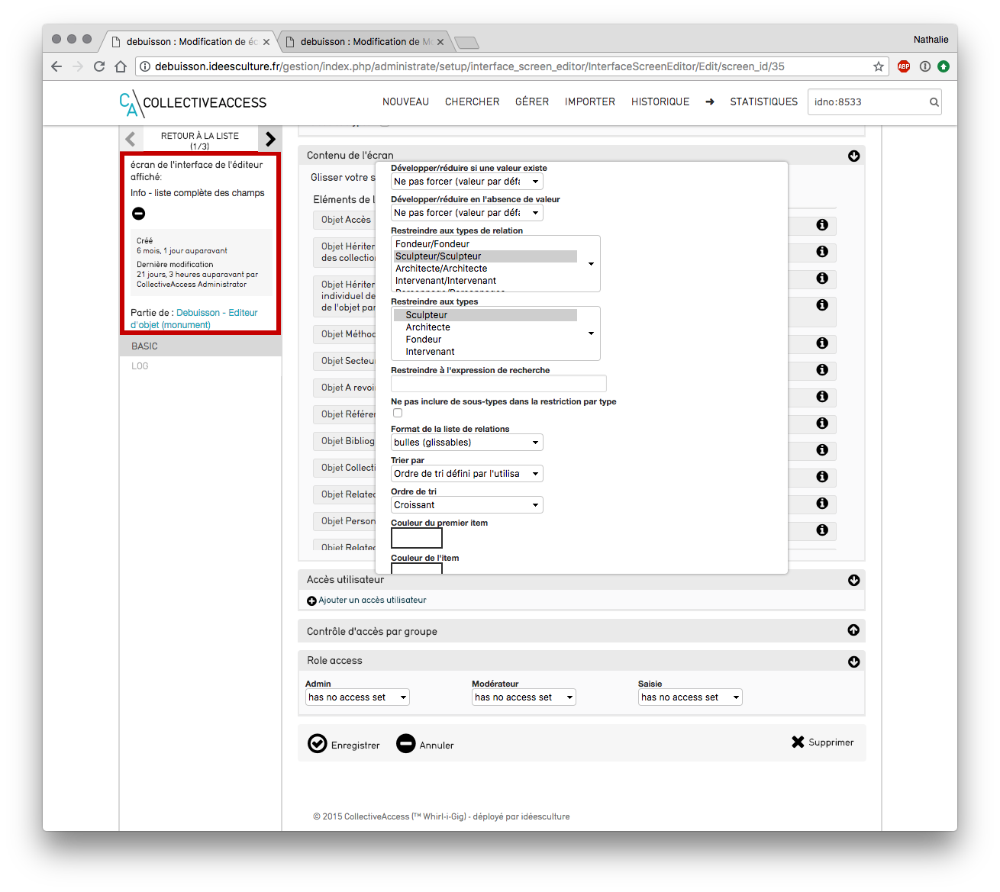
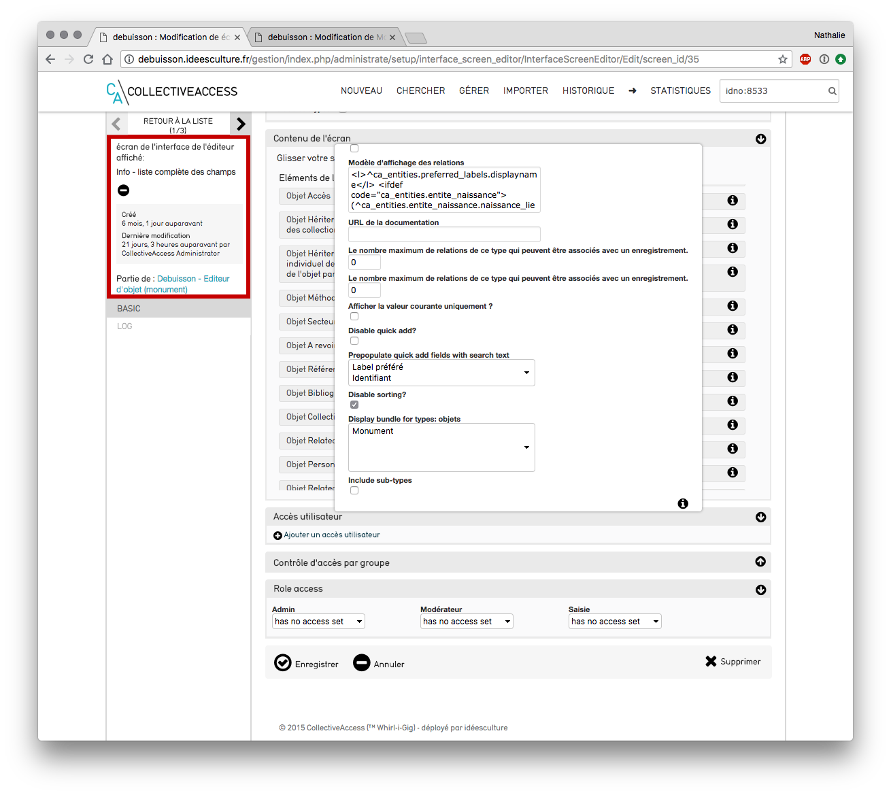
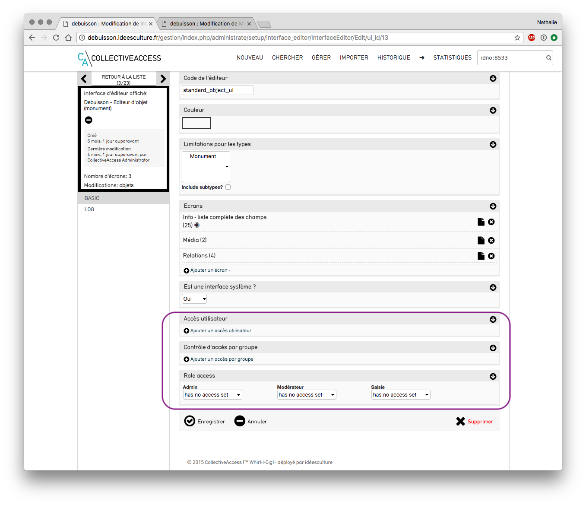

CollectiveAccess -Paramétrage des grilles de saisie¶
Menu Gérer > Administration > Interfaces utilisateurs  Liste des grilles de saisie - cliquer sur le bouton "modifier" de la grille de saisie à modifier / compléter
Ajouter un nouvel écran¶
- cliquer sur le bouton "ajouter un écran"
- saisir un libellé
- enregistrer
 Ajouter un écran
Ajouter un écran
Modifier un écran de saisie¶

Liste des écrans de saisie
- cliquer sur le bouton "modifier" de l'écran à modifier
- modifier son nom (le nom de l'écran apparait partie de gauche lors de la saisie)
- indiquer s'il s'agit de l'écran "par défaut" : si oui, la saisie s'ouvrira directement dessus
- limitation pour les types : sélectionner ici les types d'objets concernés par cet écran de saisie
NB : pour sélectionner plusieurs types d'objets, effectuer un ctrl+clic sur chacun
 Modification d'un écran de saisie
- Contenu de l'écran - 2 colonnes :
- éléments disponibles : toutes les métadonnées des objets présentes dans la base sont listées
- éléments à afficher : on place ici uniquement les champs que l'on souhaite voir en saisie
- pour déplacer un champ d'une colonne à l'autre, effectuer un glisser-déposer (cliquer tout en glissant la métadonnée vers l'autre colonne)
- de la gauche vers la droite : le champ sera désormais visible en saisie
- de la droite vers la gauche : le champ ne sera plus visible en saisie
- pour ordonner les champs dans l'écran : effectuer une opération de glisser-déposer à l'intérieur de la colonne
Penser à enregistrer après chaque modification réalisée afin qu'elle soit prise en compte.
Modification d'un écran de saisie
- Contenu de l'écran - 2 colonnes :
- éléments disponibles : toutes les métadonnées des objets présentes dans la base sont listées
- éléments à afficher : on place ici uniquement les champs que l'on souhaite voir en saisie
- pour déplacer un champ d'une colonne à l'autre, effectuer un glisser-déposer (cliquer tout en glissant la métadonnée vers l'autre colonne)
- de la gauche vers la droite : le champ sera désormais visible en saisie
- de la droite vers la gauche : le champ ne sera plus visible en saisie
- pour ordonner les champs dans l'écran : effectuer une opération de glisser-déposer à l'intérieur de la colonne
Penser à enregistrer après chaque modification réalisée afin qu'elle soit prise en compte.
Modifier les informations d'un champ¶
Le pictogramme i (infos) permet de modifier quelques informations relatives au champ.
Ces modifications ne seront visibles que pour cet écran de saisie.
1. pour un champ classique (texte, date...)

Modification du champ labels préférés
- modifier le libellé
- placer le champ en lecture seule (case à cocher) : le champ sera visible mais non modifiable
- développer / réduire si une valeur existe : le champ sera réduit ou développé selon l'option choisie (par défaut prend la valeur indiquée dans la configuration de la métadonnée)
- développer / réduire en l'absence de valeur : le champ sera réduit ou développé selon l'option choisie (par défaut prend la valeur indiquée dans la configuration de la métadonnée)
- utiliser un éditeur de texte enrichi : permet de bénéficier de la possibilité d'appliquer du gras, de l'italique... aux informations saisies dans le champ

Ex d'éditeur enrichi
2. Pour un champ de lien (personnes, lieux...)
- restreindre à une ou plusieurs relation : ex : restreindre à sculpteur
pour sélectionner plusieurs relations : ctrl + clic sur les relations concernées.
NB : pour ajouter de nouvelles relations aller à la liste, cf. Le chapitre "ajouter une nouvelle relation".

Restriction à une ou des relations
- restreindre à un type
- modèle d'affichage des relations : configuration de l'affichage en fonction de ce que l'on souhaite
ex : ici on affiche Prénom nom (lieu de naissance date de naissance - lieu de décès date de décès)

Affichage de la relation
restreindre les droits d'accès à l'écran¶
Au cas où l'on ne souhaite pas appliquer de restriction, ne pas tenir compte de ce chapitre. * Depuis un écran de saisie, si besoin, remplir les champs d'accès : - accès utilisateur : autoriser l'accès à cet écran à un utilisateur en particulier - cliquer sur le bouton + ajouter un accès utilisateur - saisir quelques lettres et sélectionner l'utilisateur souhaité - répéter l'opération pour donner l'accès à un autre utilisateur - contrôle d'accès par groupe : autoriser l'accès à tout un groupe d'utilisateur - cliquer sur le bouton + ajouter un accès par groupe* - saisir quelques lettres et sélectionner le groupe souhaité - enregistrer
restreindre les droits d'accès à la grille de saisie¶
Au cas où l'on ne souhaite pas appliquer de restriction, ne pas tenir compte de ce chapitre. * Depuis la grille de saisie, si besoin, remplir les champs d'accès : - accès utilisateur : autoriser l'accès à la grille à un utilisateur en particulier - cliquer sur le bouton + ajouter un accès utilisateur - saisir quelques lettres et sélectionner l'utilisateur souhaité - répéter l'opération pour donner l'accès à un autre utilisateur - contrôle d'accès par groupe : autoriser l'accès à tout un groupe d'utilisateur - cliquer sur le bouton + ajouter un accès par groupe* - saisir quelques lettres et sélectionner le groupe souhaité - enregistrer
 Accès à une grille de saisie